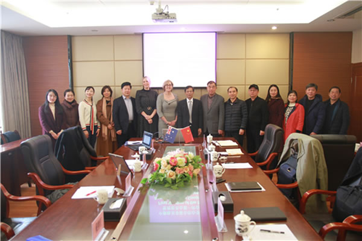
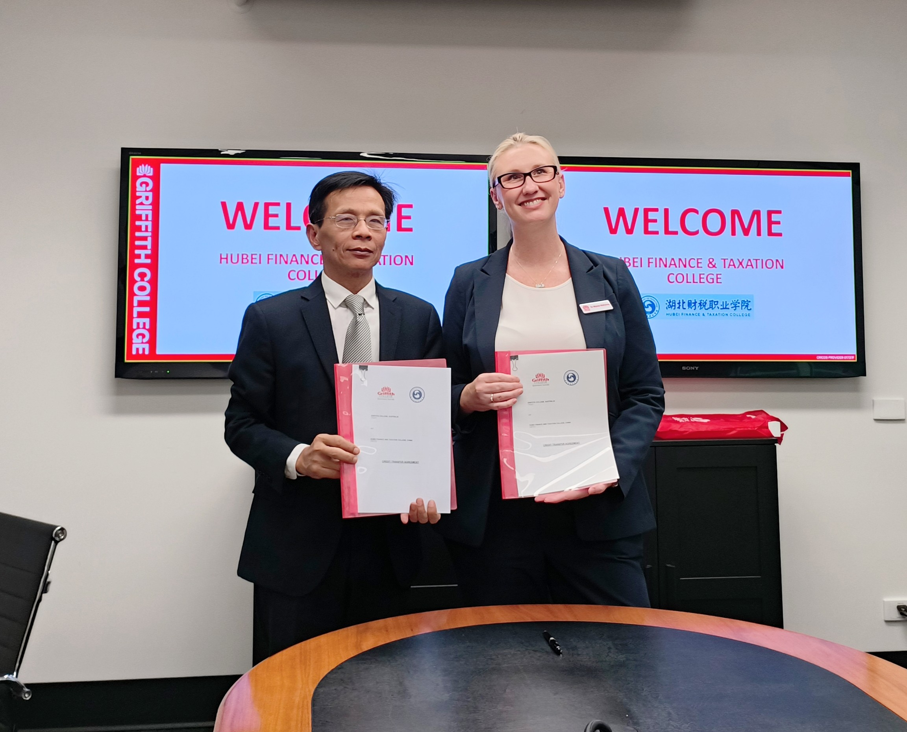
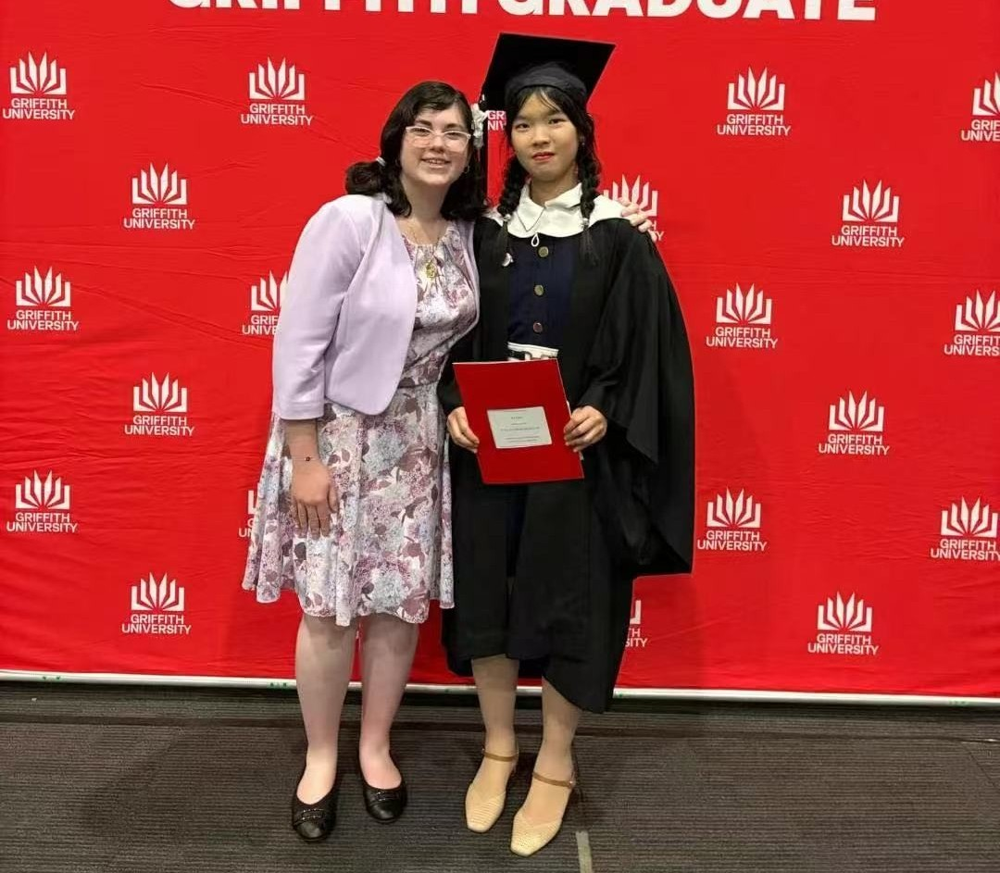
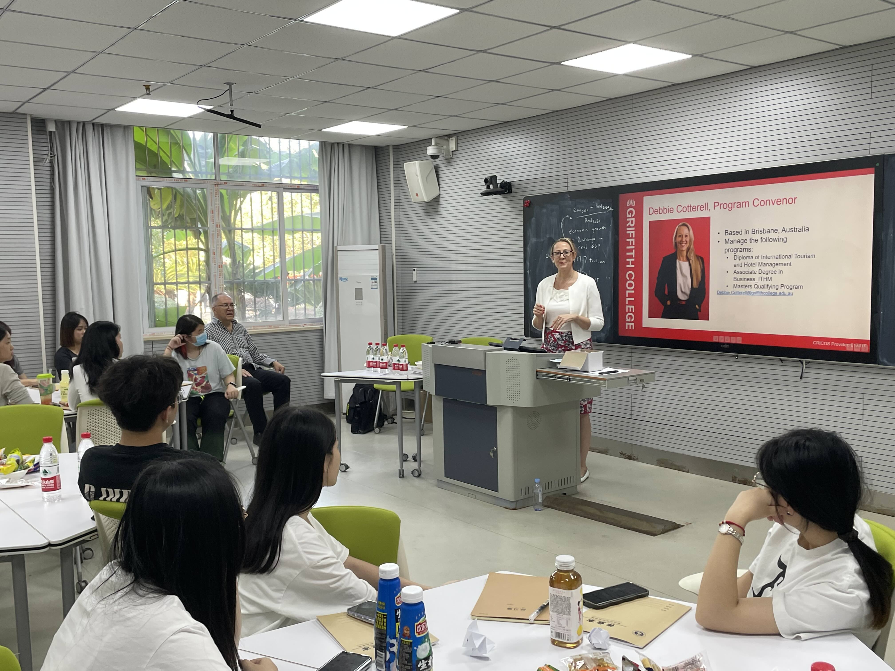
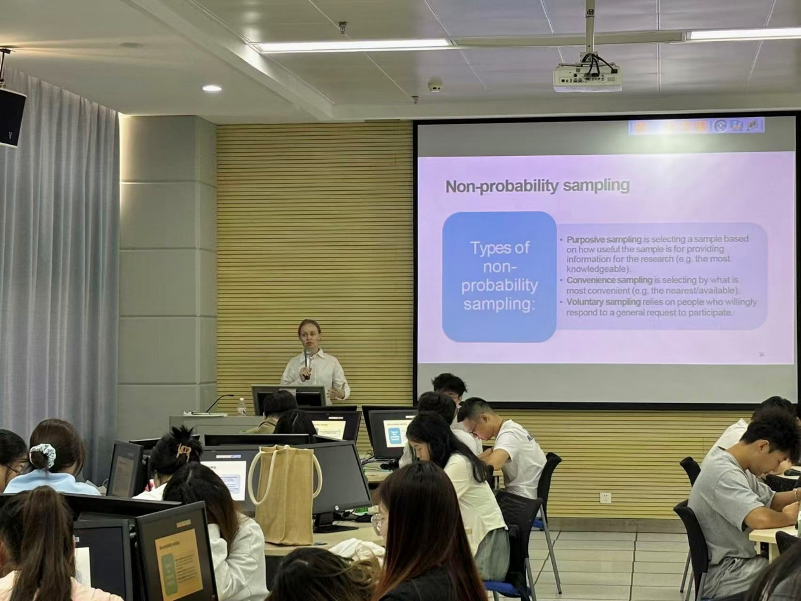
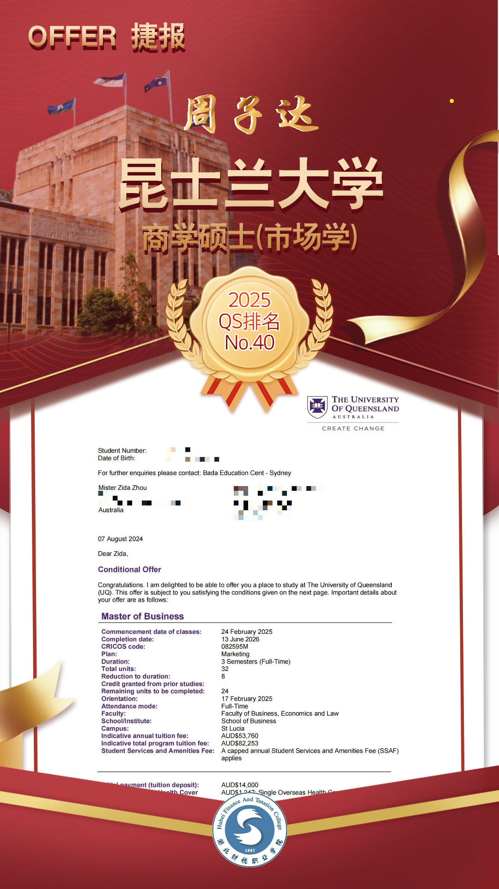
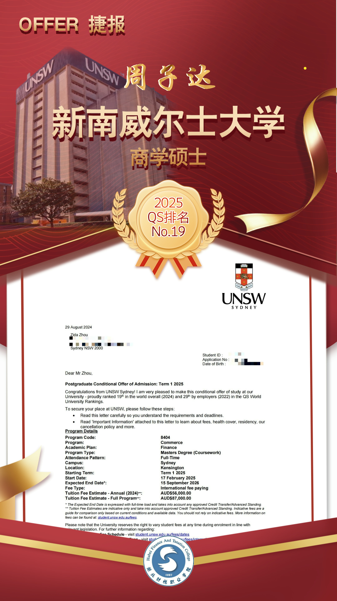
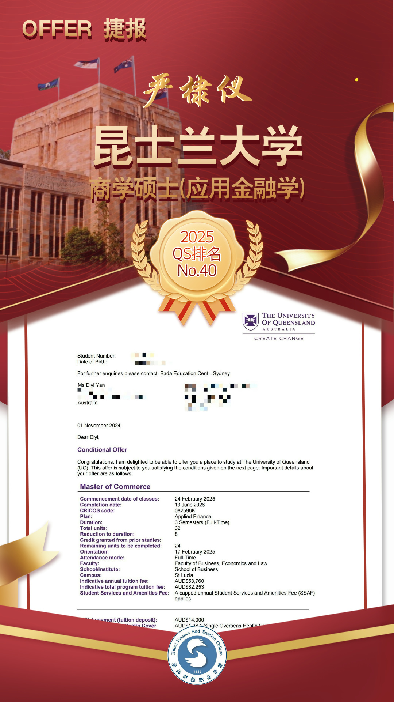
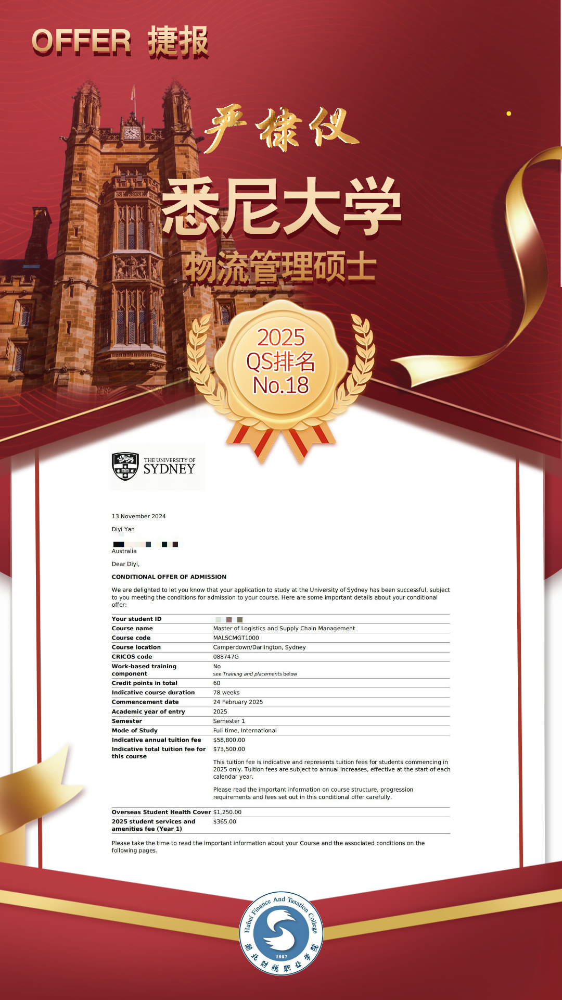

大数据与会计专业
(中外合作办学)
湖北财税职业学院与澳大利亚格里菲斯学院(Griffith College)合作举办高等专科教育项目
湖北省教育厅中外合作办学项目备案编号：
鄂教审批函【2018】5号
教育部备案编号：
教外司办学【2019】35号
-
项目动态
-

格里菲斯项目办公室揭牌仪式(2019年3月）
-

格里菲斯学院院长一行来校访问交流(2019年11月）
-

中外合作班19级学生与澳洲GC来访老师座谈
-

中外合作班20级学生趣味运动会
-
合作办学班学生在GC Mystudy平台参加在线测试
-
赴澳合作办学班学生与Griffith College老师们
-
赴澳学生在Griffith黄金海岸校区
-
赴澳学生荣获学科优秀成绩奖(之一）
-
二校院长合影(2019年湖北财税）
-

两校领导签约仪式(2024年澳格里菲斯学院）
-

出国项目生格里菲斯本科毕业典礼
-

外教课堂-Debbi
-

外教课堂-Liubov
-
-
专业简介
大数据与会计专业（中澳合作办学）
中央财政重点支持专业，国家骨干专业。近年来多次获得省级技能大赛一等奖，2016年获得全国会计技能大赛二等奖，2019年获得全国会计技能大赛一等奖。2017年开设了“涉外会计班”、“技能会计班”，2018年开设了“云财务会计师新道班”。2019年经省教育厅审批，报教育部备案同意，我校与澳大利亚格里菲斯学院（Griffith College）合作举办的“大数据与会计”专业高等专科教育项目，历经六届招生与培养，每年招生计划60人。该国际合作办学项目具备完善的教学管理制度和体系，师资力量雄厚，1/3专业课为外教授课，通过引进国外优质教育资源和先进教育理念，实现两校联合培养具有国际视野和优异英语水平的复合型人才。
大数据与会计专业（中澳合作办学）的主干课程有：经济法基础、会计基础、企业财务会计、大数据技术应用基础、智慧化税费申报与管理、智能化成本核算与管理、管理会计实务、会计信息系统应用、Excel在财务中的应用、英语听说读写等。由外教授课的专业课为：Accounting for Decision Making（决策会计）、Management Concepts（管理理念）、Introduction to Marketing (市场营销导论）、Economics for Managers（管理者经济学）、Business Communication（商业沟通）、Money, Banking & Finance（货币银行与金融）。
课程内容与格里菲斯大学和学院的课程紧密衔接，帮助学生提前适应国外教学模式，也为学生后续出国深造奠定坚实的基础。毕业生中，既有就职于国内知名企业的优秀人才，也有赴澳大利亚格里菲斯大学留学深造并获得本科学士学位的学子，更有部分留学学生被世界排名前50的顶尖大学录取攻读研究生学位。
-

- 
- 
- 
- 
-

-
-

招生计划与对象
招生计划人数（名额共计60人）：
湖北省54人，浙江省6人，合计60人。
招生对象：
参加全国高等学校入学考试，达到湖北财税职业学院专科录取分数线，有一定英语基础的高中毕业生或中职毕业生，与我院其他专科专业同一批次（高职高专批文理类）录取。 -
培养模式
1、培养模式一
中国三年大专文凭模式（3+0）：财税3年 获湖北财税职业学院专科毕业证
2、培养模式二
中国大专 + 澳大利亚本科学士学位双文凭模式（2+2）：中国财税学院2年 + 澳大利亚格里菲斯2年 获湖北财税职业学院专科毕业证 + 澳洲格里菲斯大学本科学士学位
3、培养模式三（适用于专升硕）
财税学院三年大专（模式一）+ 澳洲格里菲斯大学硕士预科（4门课）+ 格里菲斯大学硕士学位（1年～2年） 获澳洲格里菲斯大学硕士学位

-

学费和生活费
1、湖北财税职业学院学习期间的学费标准为￥16,800人/年；住宿费约￥1,240/年（具体费用以实际分配宿舍楼而定）；教材费按实际发生收取，其他收费按政府相关规定收取。
2、澳大利亚格里菲斯大学商学专业（8门课）学费标准为A$35,000澳元/年（2025年）；生活费用（如住宿、餐饮、交通、通讯等）约为A$20,000-A$29,000澳元/年不等（具体费用因个人消费习惯和所在城市而异），教材费按实际发生支付。
3、澳大利亚格里菲斯大学硕士预科一学期（4门课）学费标准为A$16,900澳元（2025年）（适用于申请澳大利亚格里菲斯大学专升硕的学生）。
参考汇率：
1 澳元 = 4.6 人民币
（参考2025年3日25日 汇率1:4.6） -
项目优势
1、师资力量雄厚，引进澳洲大学优质教育资源，学生就读期间多门专业课由澳洲格里菲斯大学和学院的资深外教授课，注册并共享Griffith College学生在线学习平台，帮助学生提前适应国外教学模式。
2、课程内容与国际接轨，开拓学生的国际化视野。英语听、说、读、写每门单独授课，培养学生的英语综合能力，对出国留学或参加国内专升本考试均有较大帮助。
3、对接大学实力雄厚，项目接轨的澳大利亚格里菲斯大学在2025年QS世界大学排名中位居255位（武汉大学194位，华中科技大学300位）。
4、发展前景多样，学生本科毕业后可继续升读（包括世界100强大学的）硕士学位，亦可选择澳洲就业或回国就业。在澳读满两个学年毕业后可申请2-4年留澳工作签证，学生回国后可在中留服进行学历认证，可报考国内事业编与公务员考试。
5、专项奖学金支持，符合条件的该项目学生可申请留学专项奖学金及优秀学生奖学金，用于赴澳深造。
6、留学服务周到，我校格里菲斯项目办公室资深指导老师提供国内外一对一全程留学服务，包括学校申请、签证申请、出行前辅导和出国后咨询、硕士及工签申请等，确保学生轻松留学，家长无忧。
-
外教介绍

Eliot Sanft，格里菲斯学院课程主管、金融课教研组组长，澳大利亚经济学会和澳大利亚金融规划协会现任成员。曾担任新西兰政府财政部经济学家，之后从事投资和基金管理，作为持证基金经理担任英国和香港公司的财务顾问。2000年开始结合自身多年的金融行业从业经验在格里菲斯学院教学，包括投资分析与管理、经济学和金融学等，Eliot的教学特色是将理论与实践有效融合。

Dr. Debbie Cotterell, 格里菲斯学院资深讲师，她在格里菲斯大学博士毕业后留校任教，有十多年丰富的教学经验。Dr. Cotterell主要负责格里菲斯学院的文凭课程、副学士学位和硕士预科课程，并在多篇学术期刊上发表学术论文，科研领域涉及旅游管理、可持续发展等方面。同时，Dr. Cotterell也是国际可持续发展专业人士协会（ISSP）成员。

Dr. Allen Huang，格里菲斯大学商学院会计、财务与经济系高级讲师和博士生导师，在格里菲斯大学执教超过三十年。黄博士主要的教学领域包括财务会计、管理会计和国际会计。研究领域包括国际会计、行为会计、财务会计、外币换算、汇率风险控制、亚太区金融报告、金融理财，并在多份世界顶级学术期刊发表学术论文。撰写学术专著一本，在新加坡出版(英文)，并被日本学者译成日文出版。Dr. Allen Huang多次获得格里菲斯大学表彰，包括获得“格里菲斯国际化杰出贡献奖”，是格里菲斯大学最受学生欢迎的教师之一。

Amber Reiher, 格里菲斯学院资深讲师，在格里菲斯学院任教已有十年。Amber的教学领域涵盖商科中的业务流程与营销、酒店与旅游管理、国际餐饮管理、雇佣关系等课程，在人力资源管理方面经验丰富，持有IV级评估与职场培训证书。

Alastair McWhir， 格里菲斯学院资深讲师，已有二十多年的教学经验，是格里菲斯学院经验丰富、最受同学们欢迎的讲师之一。他曾多次在格里菲斯大学的国际合作项目中赴海外任教，包括香港项目和我们财税项目。Alastair除管理学外，也教授商业信息学、信息系统、环境可持续发展课程，并获格里菲斯学院董事表彰及卓越教学奖。

Dr. Evelyn Anderson， 格里菲斯学院资深讲师，格里斯大学会计金融与经济学导师。从事经济学和国际商业讲师工作二十多年，曾多次获教学卓越奖，并在多个世界顶级学术期刊及学术研讨会上发表学术论文。所发表论文曾获得了东亚经济研究局颁发的“最佳论文”奖。同时，Dr. Anderson是亚洲商业管理协会（ABMC）国际能力管理协会（ICCBM）、商业历史学家协会（ABH）等多个相关领域专业协会的成员。
-

联系方式
地址：
实训与国际合作中心&格里菲斯项目办公室（东区行政楼108室）湖北财税职业学院（湖北省武汉市武昌区白沙洲大道519号）
邮编：430064
电话：133 1719 2412 戴老师
133 9609 0962戴老师
88112812贾老师
网址：http://www.hbcszyxy.edu.cn/
合作院校简介：
澳大利亚格里菲斯学院Griffith College（https://www.griffithcollege.edu.au/）（中华人民共和国教育部涉外监管网认证），主要开设格里菲斯大学的大学预科课程、文凭课程、商学副学士学位以及研究生预科课程。高质量的教学、一流的设备、完善的学术和学生支持服务是格里菲斯学院的核心教育理念。格里菲斯学院位于格里菲斯大学布里斯班校区和黄金海岸校区。 学生享有格里菲斯大学的校园设施（如：图书馆、电脑教室、商店、健身房），专业设施（如：模拟护理病房、科学实验室、艺术工作室等）以及一系列的支持服务（如：语言支持、学习辅导等）。

澳大利亚格里菲斯大学Griffith University（https://www.griffith.edu.au/）（中华人民共和国教育部涉外监管网认证）是澳大利亚联邦政府投资建设的一所综合性公立高等学府。格里菲斯大学在全国高校排名位列前2%，拥有超过55,000名学生和来自130多个国家的250,000名校友。世界一流的研究中心、国际前沿的研究者和创新性的教学实践使格里菲斯大学声名远扬。在2025年QS世界大学排名中位列第255位（参考同期排名的中国大学：武汉大学194，北京师范大学271，华中科技大学300），被公认为亚太地区最具创新力和影响力的大学之一。格里菲斯大学拥有六个校区，其中五个实体校区分布在风自然环境优美，交通便利的布里斯班和黄金海岸地区，另设有一个数字校区。格里菲斯学科门类齐全，涵盖文学、商学、理学、教育学、工程学、医学、法学、音乐、艺术以及信息技术等十大学科领域300多门课程，许多专业课程包含实习期，使学生具备良好的就业能力。

格里菲斯大学共有Nathan、Gold Coast、Mt Gravatt、Logan和South Bank五个校区，横跨澳大利亚昆士兰州东南部的三个城市，自然环境优美，交通便利。学校提供多种具有创新性和相关性的学位，开设了300多门本科和研究生课程，教学内容涵盖了文学、商学、教育、工程与信息技术、健康、法律与犯罪学、音乐、自然与建筑环境、理学、视觉与创造性艺术等10个领域。许多专业课程包含实习期，使学生具备良好的就业能力。

学生评价：
彭雅琳：
作为我们中外班的一员，经过在校一年的学习生活，感到自己受益良多。尤其是在英语方面，负责我们听说读写的四位老师更是面面俱到，使我们的英语水平做到了全面的稳健提升。由于疫情的爆发，我们春季学期的课程都改为了网上教学，包括与 Griffith 大学外教老师的见面。但在我们财税老师的努力和协调下，同学们凭着自己扎实的基础，与外教老师的交流几乎做到了无障碍，这给我们今后与外教老师的专业学习课带来了很大的信心。
张汇丽：
我们这个国际班优点有很多，①是可以去格兰菲斯大学上学回国以后可以直接拿双学士学位而且还是本科，毕业之后可以在国外当地就工也可以回国发展。②我们国际班可以更好的学到英语知识，我们的英语是一对一指导，我们的老师都是从格兰菲斯大学的老师来到这个班，给我们传授知识，上升的空间非常大，知识也更加生动丰富。③可以选择去国外上课，体验不一样的风土人情，当然仅凭个人意愿。④我们国际班的资源是整个学校最好最丰富的，不论是设备还是老师都是整个学校最顶尖的。⑤在本校读完一年后可以选择去格兰菲斯大学继续上课，去国外上课可以开阔自己的眼界，可以更好提高自己自理的能力，格兰菲斯大学的设备也是非常的棒，格兰菲斯大学分为两个校区，有繁华一点的，有接近郊区一点的，他们的宿舍校内设备丰富齐全。
郑秋芬：
我们是国际班的学生，国际班的我们不出国门就可以与澳大利亚的格里菲斯学校建立联系，可以享受各个方面的优势，我们国际班拥有良好的英语学习氛围，可以快速的提高你的英语水平，有很强的学习任务，可以增强我们的综合素质，可以让你尽情的展示自己的。可以培养我们的积极性和个性，。国际班和普通班的教学方式和传统的应试教育不同，它注重培养学生的思考能力和实践能力，所以我们国际班出来的学生在面对不同的环境时适应力更强。
程维伟：
I feel that foreign teachers give people the feeling that they are friends and equal relations. Foreign teachers are particularly playful and easygoing, have rich body and facial expressions when giving lectures, and pay great attention to communication with students. On the other hand, our domestic professors are more serious and serious, and it is easy to give people a sense of distance.
郭利：
In the international class, we have the pressure to go abroad. We are very busy and tired every day, and we have a full schedule of classes. But on the other hand, with the process of the international class, we have made great progress. The foreign teacher is very serious and responsible, very patient to teach us, never get bored. The atmosphere in the foreign teacher's class is also very relaxed and lively. We have a good time learning in that environment.
汪祺：
我觉得我们国际班有以下积极特点：在外教课的方面来说：第一，外教课让我们更有凝聚力，使我们更加团结，因为我们班有的同学英语基础不太好，使同学们互帮互助，第二，外教课的作业活动，锻炼了我们协作的能力，都经历了互相磨合的过程。第三，我们通过外教课也学到了很多知识，也提高了我们的英语水平，让我们口语变得更好
朱彬郁：
Dear Melanie, I have learned a lot from you in these days when you teach business communication, which is very helpful to me. In the beginning, I thought this class would be difficult, but after contact, I found you kind and amiable. I felt no pressure or tension in your class. Especially when playing the game of millionaires, I found the prizes very interesting. I hope I can still take your class.
钱亚杰：
国际班的学习拓宽了我的知识面，提高了我英语听说读写的能力，老师教学质量高，内容丰富，课堂学习氛围浓厚，经常布置小组任务，锻炼了我们的团队协作能力和沟通能力。
常见问答：
湖北财税·格里菲斯的中澳合作办学项目受教育部认可吗？
受到教育部认可。湖北省教育厅中外合作办学项目备案编号：鄂教审批函【2018】5号，教外司办学【2019】35号。
湖北财税·格里菲斯的中澳合作办学项目学生毕业生获得哪些学历证书？
合作办学项目学生可选择出国或不出国学习。出国的学生在我校读完2年课程后赴澳大利亚格里菲斯继续完成2年且修满学分，毕业后获得湖北财税职业学院专科毕业证和澳大利亚格里菲斯大学本科学士学位。不出国的学生在财税学院完成3年课程且修满学分，毕业后获得湖北财税职业学院专科毕业证。以上毕业证书均受教育部认可。
湖北财税·格里菲斯的中澳合作办学项目后续有怎样的发展前景？
中国“专升本”模式（总时长5年）：在财税完成3年学习获得湖北财税职业学院专科毕业证后，参加国内专升本考试，录取后读2年本科可获本科学历。具体信息请学生在大三4/5月份时关注湖北省教育厅关于专升本的公告，湖北省教育厅每年会公布可专升本的院校名单、录取名额及考试细则，根据所报考专升本院校要求准备。
澳大利亚“专升本”模式（总时长4年）：在财税学院学习2年后出国，到澳大利亚格里菲斯学院继续学习2年修满学分后可获得湖北财税职业学院专科毕业证和澳大利亚格里菲斯大学本科学士学位。
澳大利亚“专升硕”模式（总时长5年）：在财税完成3年学习获得湖北财税职业学院专科毕业证后，可以进入澳大利亚格里菲斯大学一个学期的硕士预科学习（4门课），然后入读格里菲斯大学的硕士课程（1-2学年）。
澳大利亚“本升硕”模式（总时长5-6年）：获格里菲斯大学本科学位后，可继续升读硕士学位课程（1-1.5年）毕业后获澳大利亚格里菲斯大学硕士学位。
湖北财税·格里菲斯的中澳合作办学项目录取要求是什么？
达到专科录取分数线的应届高中毕业生或中职毕业生均可报名。欢迎广大学子报读我校中澳合作办学项目。
湖北财税·格里菲斯的中澳合作办学项目出国留学对学生英文有要求吗？
有。直入读格里菲斯学院英语水平需达到雅思总分5.5（听说读写单项5分）或完成格里菲斯学术英语EAP4。未达到要求的，可以在开始主修课之前配读相应的学术英语课程，完成后直接入读主修课程，无需再考雅思。
如何保证外教授课学生能听懂呢?
中澳合作办学项目学生的英语课为听力、阅读、口语、写作每项单独授课，学生在大一经过一年的英语强化后，综合水平会有很大提升。外教的专业课主要集中在第二学年完成，且每门课都会配有财税的教师辅导，帮助学生理解消化外教所授课程。每节外教课的PPT都会提前发给学生，以便学生提前预习并了解授课内容。每位学生都会获得外教课程的全部网络学习资源，包括参考书、外教课录像、作业解答等等。
学校也采取了一些有效措施来帮助学生上外教课，例如引入澳洲大学的学术英语，使学生的学术英语水平不断提高，进一步帮助学生听懂外教课。从现有的国际合作项目学生的学习情况看，一年以后学生基本上能大致听懂外教课。该项目班用大量的英语培训课替代了普通班的通识课程，从而更有效地利用了学生在校的学习时间。
国际班的学生到澳洲留学后在同一个班上吗？
不一定所有课程都在一个班。澳洲的大学采取学分制，同一专业的学生没有固定的班级。专业课程分为必修课与选修课，学生选择的课程不同，上课的时间也就不同。格里菲斯学院有三个学期，学生在2月、6月、10月均可入学。若学生在同一学期入学且选择了相同时间段的课程，则可以在一个班学习。
可以申请奖学金吗？
可以。湖北财税与格里菲斯学院为每届赴澳学生都设置了一定数额的奖学金，奖励每届学生中优秀学生赴澳留学。
澳大利亚格里菲斯大学怎么样？
格里菲斯大学是澳洲综合性公立大学，在QS（2025年）世界大学排名中格里菲斯大学居255位，参考同期排名的中国大学：武汉大学194，北京师范大学271，华中科技大学300）。大学拥有六个校区，其中五个实体校区横跨风景宜人的布里斯班与黄金海岸，另设有一个数字校区。格里菲斯学科门类齐全，涵盖文学、理学、商学、教育学、工程学、医学、法学、艺术以及信息技术等十大学科领域300多门课程，专业课程体系丰富多彩。
澳洲格里菲斯大学的学费和生活费大约是多少？
格里菲斯大学一年（8门课）学费标准约A$35,000澳元/年，一年生活费约A$20,000-A$29,000澳元/年不等（具体费用因个人消费习惯和所在城市而异）。（汇率1:4.6，请关注汇率波动，2025年3月）
项目学生赴澳需要申请澳洲签证吗?
需要。我校设有湖北财税·格里菲斯项目办公室，统一为项目学生提供一站式留学签证指导服务，确保材料完整，入学和签证申请有保障，无需面签。
澳大利亚生活环境安全吗？
澳大利亚是一个发达的现代化工业国家，是南半球经济最发达的国家之一。澳大利亚气候宜人，自然风景优美，社会环境安定，是全世界枪支管制最严格的国家之一，犯罪率低。同时，它也是一个多元文化的大熔炉，是世界上最安全的国家之一。
澳洲读书期间可以打工吗?
持有学生签证的留学生可在学期期间每两周工作最多48小时，假期无限制。澳大利亚拥有英美澳国家中最高的最低时薪，当前政府规定的最低工资为每小时24.10澳元。学生在不影响学业的情况下可从事兼职工作，不仅能贴补平时的消费，也能锻炼自己的英语口语交流能力，更好地融入当地环境。
毕业后有留澳工作或移民机会吗？
有。在澳大利亚格里菲斯大学完成至少2个学年并获得本科或硕士学位后，可申请2-3年留澳工作签证。澳大利亚是多元文化的移民国家，留学生亦有资格申请移民澳洲。财税学院格里菲斯项目办公室将指导和帮助学生申请签证。